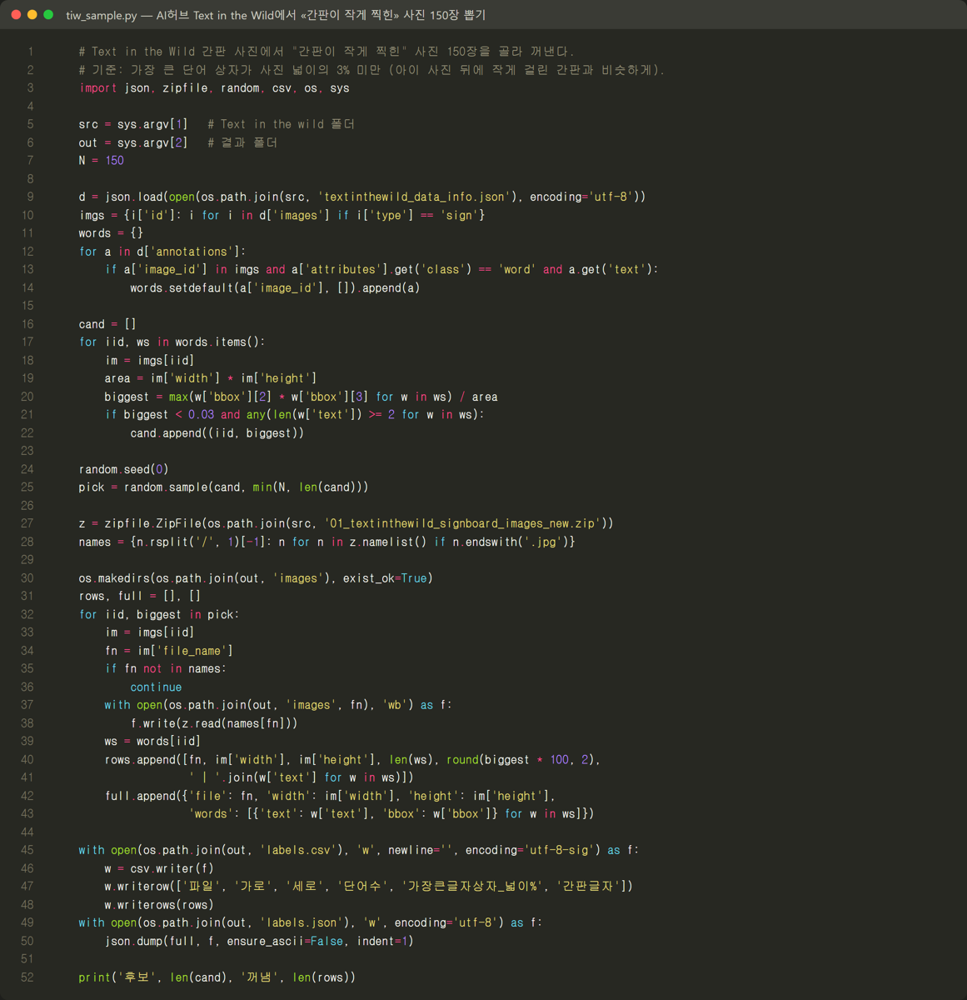
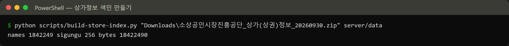
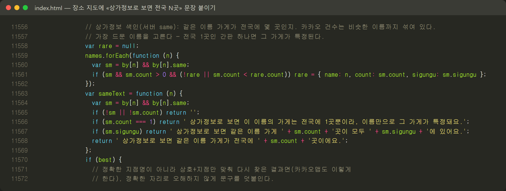

공개 데이터로 위치 좁히기 · 시도
공개 데이터로 위치 좁히기를 시도했습니다
간판 하나로 한 곳까지
좁혀지는 경우는 410개 중 26개
26개에도 «물품보관» «찌개포장» «MINISTOP»처럼 가게 이름이 아닌 글자가 섞여 있어 실제로는 더 적음
AI 허브 «Text in the Wild» 간판 사진 150장 → 상호명 410개

전국 상가 275만 곳 · 어린이집 · 유치원 · 학교 · 학원

대전 서구만 보면 «푸라닭 1곳» → 전국으로 넓히면 117곳
위치를 찍어 주는 기능은 안 만듦 (대부분 안 좁혀지고, 악용될 수 있음) · «이 이름은 전국 ○곳뿐» 알림으로만 앱에 넣음
